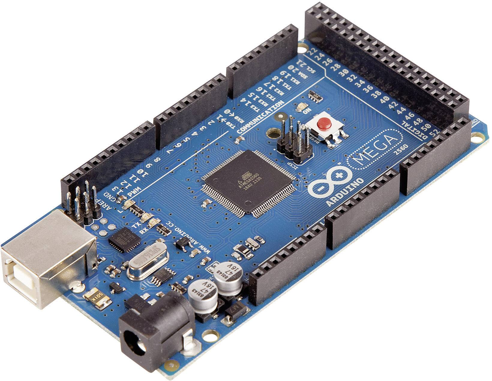

ARDUINO

Zgradba in uporaba.
Kje ga lahko kupim?
Nauči se osnove.
Arduino nano je majhen mikrokontroler, ki je zmožen veliko. Uporablja ATmega328 mikrokontroler, z AVR arhitekturo. Delovna napetost je 5V, sprejme pa tudi od 7-12V prek input pinov. Deluje na frekvenci 16MHz. Ima 32KB flash spomina, 2KB sta pa uporabljena za bootloader. Velik je 18x45 mm in težak 7 g.
Arduino zero je preprost in močan 32-bitna razširitev po UNO platformi. Arduino uno je hitrejši, in ima še večji obseg možnih projektov. Uporablja ATSAMD21G18, 32-bit ARM Cortex M0+ mikrokontroler. Delovna napetost je 3,3V. Ima 256KB flash spomina, in ima frekvenco 48Mhz. Velik je 68x53 mm in težak 12g.
Arduino mega je mikrokontroler narejen glede na ATmega2560. Ima 54 digitalnih I/O pinov, 16 analognih pinov in 4 UART pine. Njegova frekvenca je 16MHz, delovna napetost je 5V ima 256KB flash spomina in od tega je 8KB bootloader. velik je 102x53 mm in težak 37g.

Arduino uno je mikrokontroler zgrajen glede na ATmega328P. Ima 14 digitalnih pinov, 6 analognih pinov. Deluje na frekvenci 16Mhz. Delovna napetost je 5V, 32KB flash spomina od tega je 0,5KB uporabljeno za bootloader. velik je 69x53 mm in težak 25g.
Arduino yun z sistemi ki temeljijo na linux dovoljujejo napredne omrežne aplikacije in povezave. Temelji na ATmega32U4 in ima delovno napetost 5V. iMA 20 I/O pinov, 32KB flash spomina od tega je 4KB bootloader in frekvenco 16MHz.